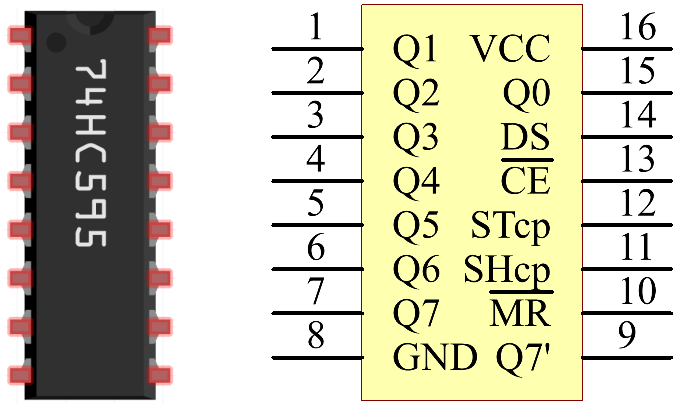

Nota
Ciao, benvenuto nella community SunFounder per gli appassionati di Raspberry Pi, Arduino ed ESP32 su Facebook! Approfondisci il mondo di Raspberry Pi, Arduino ed ESP32 insieme ad altri appassionati.
Perché unirsi?
Supporto Esperto: Risolvi problemi post-vendita e sfide tecniche con l’aiuto della nostra community e del nostro team.
Impara e Condividi: Scambia suggerimenti e tutorial per migliorare le tue abilità.
Anteprime Esclusive: Ottieni accesso anticipato a nuovi annunci di prodotto e anteprime esclusive.
Sconti Speciali: Approfitta di sconti esclusivi sui nostri prodotti più recenti.
Promozioni e Omaggi Festivi: Partecipa a omaggi e promozioni durante le festività.
üëâ Pronto per esplorare e creare con noi? Clicca su [Qui] e unisciti oggi!
1.1.4 Display a 7 Segmenti
Introduzione
Proviamo a pilotare un display a 7 segmenti per mostrare numeri da 0 a 9 e lettere da A a F.
Componenti

Principio
Display a 7 Segmenti
Un display a 7 segmenti è un componente a forma di «8» che contiene 7 LED. Ogni LED è chiamato segmento - quando è acceso, un segmento forma parte di un numero da visualizzare.
Esistono due tipi di connessione: Catodo Comune (CC) e Anodo Comune (CA). Come suggerisce il nome, un display CC ha tutti i catodi dei 7 LED collegati, mentre un display CA ha tutti gli anodi collegati. In questo kit usiamo il primo tipo.

Ogni LED del display è associato a un segmento posizionale con un pin di connessione che emerge dal pacchetto di plastica rettangolare. I pin dei LED sono etichettati da «a» a «g», ciascuno rappresentante un LED individuale. Gli altri pin LED sono collegati insieme formando un pin comune. Alimentando i pin appropriati dei segmenti in un ordine specifico, alcuni segmenti si illumineranno mentre altri rimarranno spenti, mostrando il carattere corrispondente sul display.
Codici Display
Per comprendere come i display a 7 segmenti (Catodo Comune) mostrano i numeri, abbiamo preparato la tabella seguente. I numeri rappresentano i caratteri 0-F visualizzati sul display a 7 segmenti; (DP) GFEDCBA indica i LED corrispondenti impostati su 0 o 1. Ad esempio, 00111111 significa che DP e G sono impostati su 0, mentre gli altri sono impostati su 1. Pertanto, viene visualizzato il numero 0, mentre il Codice HEX corrisponde al numero in esadecimale.

74HC595
Il 74HC595 è composto da un registro a scorrimento a 8 bit e da un registro di memoria con uscite parallele a tre stati. Converte l’input seriale in output parallelo, permettendo di risparmiare sui pin IO di un MCU.
Quando MR (pin10) è a livello alto e OE (pin13) è a livello basso, i dati vengono immessi al fronte di salita di SHcp e passano al registro di memoria tramite il fronte di salita di SHcp. Se i due clock sono collegati insieme, il registro a scorrimento è sempre un impulso avanti rispetto al registro di memoria. Nel registro di memoria vi è un pin di input seriale (Ds), un pin di output seriale (Q) e un pulsante di reset asincrono (livello basso). Il registro di memoria produce un Bus con un output parallelo a 8 bit in tre stati. Quando OE è abilitato (livello basso), i dati nel registro di memoria vengono inviati al bus.
{kind=link}
Piedini del 74HC595 e loro funzioni:
Q0-Q7: Uscite di dati paralleli a 8 bit, in grado di controllare direttamente 8 LED o 8 pin di un display a 7 segmenti.
Q7’: Uscita seriale, collegata al DS di un altro 74HC595 per connettere in serie più 74HC595.
MR: Pin di reset, attivo a livello basso;
SHcp: Ingresso di sequenza temporale del registro a scorrimento. Allo spigolo di salita, i dati nel registro a scorrimento avanzano di un bit, ad esempio, i dati in Q1 passano a Q2 e così via. Allo spigolo di discesa, i dati nel registro a scorrimento rimangono invariati.
STcp: Ingresso di sequenza temporale del registro di memoria. Allo spigolo di salita, i dati nel registro a scorrimento vengono trasferiti al registro di memoria.
CE: Pin di abilitazione dell’uscita, attivo a livello basso.
DS: Ingresso dati seriale.
VCC: Tensione di alimentazione positiva.
GND: Massa.
Schema Elettrico
Collega il pin ST_CP del 74HC595 al GPIO18 del Raspberry Pi, SH_CP al GPIO27, DS al GPIO17 e le uscite parallele agli 8 segmenti del display a 7 segmenti. I dati vengono immessi nel pin DS del registro a scorrimento al fronte di salita di SH_CP (clock di registrazione) e nel registro di memoria al fronte di salita di ST_CP (clock di memoria). Controllando gli stati di SH_CP e ST_CP tramite i GPIO del Raspberry Pi, puoi trasformare l’input seriale in output parallelo, risparmiando i GPIO del Raspberry Pi e pilotando il display.
T-Board Name |
physical |
wiringPi |
BCM |
GPIO17 |
Pin 11 |
0 |
17 |
GPIO18 |
Pin 12 |
1 |
18 |
GPIO27 |
Pin 13 |
2 |
27 |

Procedure Sperimentali
Passo 1: Costruisci il circuito.

Passo 2: Accedi alla cartella del codice.
cd ~/davinci-kit-for-raspberry-pi/c/1.1.4/
Passo 3: Compila.
gcc 1.1.4_7-Segment.c -lwiringPi
Passo 4: Esegui il file eseguibile appena creato.
sudo ./a.out
Dopo aver eseguito il codice, vedrai il display a 7 segmenti mostrare i numeri da 0 a 9 e le lettere da A a F.
Nota
Se il programma non funziona o compare un messaggio di errore: "wiringPi.h: No such file or directory», consulta Il codice C non funziona?.
Codice
#include <wiringPi.h>
#include <stdio.h>
#define SDI 0 // input dati seriale
#define RCLK 1 // ingresso clock della memoria (STCP)
#define SRCLK 2 // ingresso clock registro a scorrimento (SHCP)
unsigned char SegCode[16] = {0x3f,0x06,0x5b,0x4f,0x66,0x6d,0x7d,0x07,0x7f,0x6f,0x77,0x7c,0x39,0x5e,0x79,0x71};
void init(void){
pinMode(SDI, OUTPUT);
pinMode(RCLK, OUTPUT);
pinMode(SRCLK, OUTPUT);
digitalWrite(SDI, 0);
digitalWrite(RCLK, 0);
digitalWrite(SRCLK, 0);
}
void hc595_shift(unsigned char dat){
int i;
for(i=0;i<8;i++){
digitalWrite(SDI, 0x80 & (dat << i));
digitalWrite(SRCLK, 1);
delay(1);
digitalWrite(SRCLK, 0);
}
digitalWrite(RCLK, 1);
delay(1);
digitalWrite(RCLK, 0);
}
int main(void){
int i;
if(wiringPiSetup() == -1){ // se l'inizializzazione di wiring fallisce, stampa un messaggio
printf("setup wiringPi failed !");
return 1;
}
init();
while(1){
for(i=0;i<16;i++){
printf("Print %1X on Segment\n", i); // %X means hex output
hc595_shift(SegCode[i]);
delay(500);
}
}
return 0;
}
Spiegazione del Codice
unsigned char SegCode[16] = {0x3f,0x06,0x5b,0x4f,0x66,0x6d,0x7d,0x07,0x7f,0x6f,0x77,0x7c,0x39,0x5e,0x79,0x71}; Un array di codici per segmenti da 0 a F in esadecimale (catodo comune).
void init(void){
pinMode(SDI, OUTPUT);
pinMode(RCLK, OUTPUT);
pinMode(SRCLK, OUTPUT);
digitalWrite(SDI, 0);
digitalWrite(RCLK, 0);
digitalWrite(SRCLK, 0);
}
Imposta i pin ds, st_cp e sh_cp su OUTPUT e il loro stato iniziale a 0. void hc595_shift(unsigned char dat){} Per assegnare un valore a 8 bit al registro a scorrimento del 74HC595.
digitalWrite(SDI, 0x80 & (dat << i));
Assegna i dati di «dat» a SDI (DS) per singoli bit. Supponiamo dat=0x3f (0011 1111); quando i=2, 0x3f si sposta a sinistra (<<) di 2 bit. 1111 1100 (0x3f << 2) & 1000 0000 (0x80) = 1000 0000, quindi vero.
digitalWrite(SRCLK, 1);
Il valore iniziale di SRCLK è impostato a 0, e qui è impostato a 1 per generare un impulso di salita, quindi trasferisce i dati DS nel registro a scorrimento.
digitalWrite(RCLK, 1);
Il valore iniziale di RCLK è impostato a 0, e qui è impostato a 1 per generare un impulso di salita, quindi trasferisce i dati dal registro a scorrimento al registro di memoria.
while(1){
for(i=0;i<16;i++){
printf("Print %1X on Segment\n", i); // %X means hex output
hc595_shift(SegCode[i]);
delay(500);
}
}
In questo ciclo «for», usiamo «%1X» per visualizzare «i» come numero esadecimale. Usiamo «i» per trovare il codice segmento corrispondente nell’array SegCode[], e utilizziamo hc595_shift() per trasferire il SegCode nel registro a scorrimento del 74HC595.